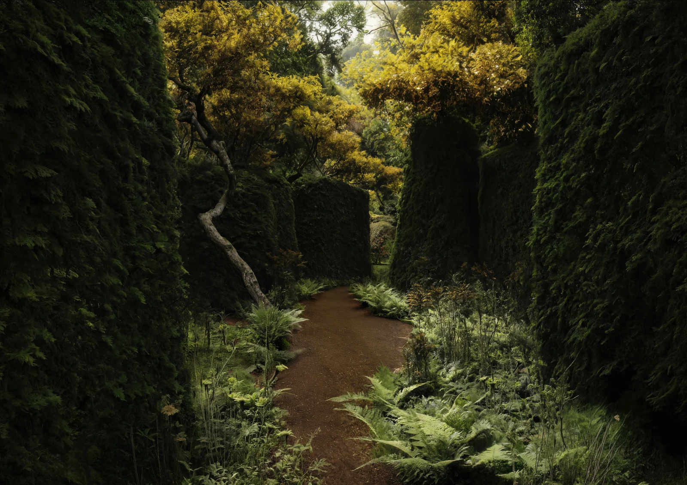
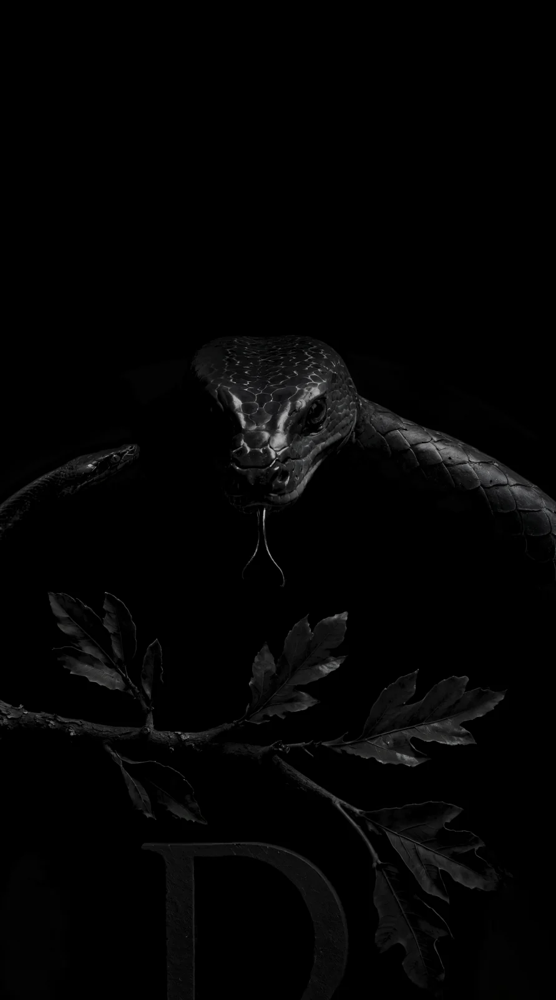

Denis
Daragan
Ландшафт / ИзбранноеSecret Garden
01 / 02
Secret Garden
02 / 02
A French manor
RAEVO
Для Derevo Park
Papushevo Park
Совместно с CHADO
Открытый амфитеатр
Совместно с CHADO
Merchant Zlobin
Для Derevo Park
Сад выпускников
В сотрудничестве с L.BURO
Private Provencal estate
01 / 02
Private Provencal estate
02 / 02
Beach hut
Крым
Совместно с CHADO
Отель
Play Hub
В сотрудничестве с L.BURO
01 / 02
Play Hub
В сотрудничестве с L.BURO
02 / 02
Пространство и скульптура
АЛАРОС
2023–2025
